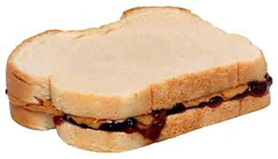

My Favorite Food

Peanut Butter and Jelly
Ingredients:
Peanut Butter
Jelly
Bread
Directions
Collect your ingredients. ...
Spread peanut butter evenly onto one slice of bread using a knife. ...
Spread jelly or jam evenly onto the other slice of bread. ...
Press the two slices of bread together. ...
Cut the sandwich. ...
Enjoy your easy and yummy looking sandwich!